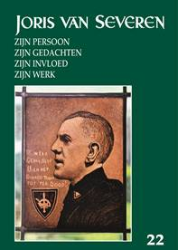
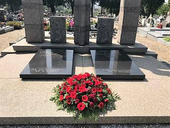
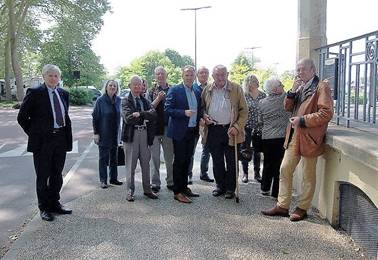
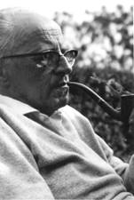
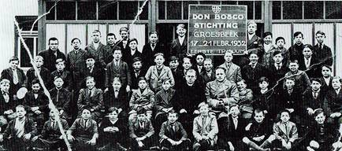

> nieuwsbrief > 2018 - nr 3
Inhoud
Hernieuwen
ledenbijdrage voor 2018
De hernieuwing van de ledenbijdragen voor 2018 verliep
traditiegetrouw vlot. Toetreden kan nog steeds, mits overboeking
van de ledenbijdrage. Even herinneren: de minimumbijdrage blijft
ongewijzigd en bedraagt 29 €. In ruil daarvoor verzekeren we u
de stipte toezending van het nieuwe Jaarboek Joris van
Severen – het 22e al – in de meimaand en
van de vier nummers van ons kwartaalblad Nieuwsbrief
Joris van Severen. Vanaf het bedrag van 35
€ boeken we u met dank als steunend lid. Vereffening graag via
onze rekening IBAN: BE71 0001 7058 1469 – BIC: BPOTBEB1 t.n.v.
Studiecentrum Joris van Severen, Paddevijverstraat 2, 8900
Ieper.
GDPR: Mogen wij u
blijvend op de hoogte houden?
Op
25 mei trad de Europese Algemene Verordening Gegevensbescherming
(GDPR) in werking. We maken gebruik van uw e-mailadres om u in
te lichten over onze activiteiten. Uw gegevens hebben we
verzameld n.a.v. een eerder contact. Met dit bericht willen we u
erop wijzen dat u op elk ogenblik het recht hebt om uw
e-mailadres uit onze mailinglijst te verwijderen via een simpele
e-mail. Uw gegevens worden niet met derden gedeeld en zijn
opgeslagen in een beveiligde omgeving. Onze volledige
privacyverklaring vindt u op www.jorisvanseveren.org
Scriptieprijs Studiecentrum Joris van Severen
Het Studiecentrum
Joris van Severen is een vereniging die de studie naar de
persoon en de ideeën van Joris van Severen (1894-1940) wenst te
bevorderen. In de loop van de afgelopen decennia is daartoe een
archief aangelegd rond Joris van Severen en zijn bewogen
politieke loopbaan, in het bijzonder het Verbond van Dietse
Nationaal-solidaristen (Verdinaso). Dit archief is in 2000
overgedragen aan de universiteitsbibliotheek van de Katholieke
Universiteit Leuven en werd aldaar ondertussen grotendeels
geïnventariseerd door dr. Bart Coppein.
Het doel van de archiefoverdracht was om de
wetenschappelijke studie over Joris van Severen en het Verdinaso
te stimuleren. Het Studiecentrum wil deze studie actief gaan
bevorderen door het instellen van een scriptieprijs voor
studenten, waar een geldbedrag van 500 € aan is
verbonden.
Graag zouden we iedereen willen vragen om deze
scriptieprijs onder de aandacht te brengen van studenten en van
de bij u bekende professoren. Het Joris van Severen-archief aan
de KU Leuven is nog deels onontgonnen en een wetenschappelijke
biografie ontbreekt vooralsnog. Er is met andere woorden sprake
van historisch onontgonnen terrein en ook ideologisch roept de
persoonlijkheid van Joris van Severen nog steeds veel vragen op
rond zijn politieke ontwikkeling. Ook is er nog nauwelijks iets
bekend over de samenstelling van zijn aanhang.
Op basis van minimaal twee inzendingen zal een
commissie binnen het Studiecentrum de prijs al dan niet
toekennen aan een scriptie die handelt over de persoon Joris van
Severen, het Verdinaso of één van de naoorlogse
Nachfolge-bewegingen. De scriptie hoeft niet noodzakelijk een
eindscriptie te zijn, maar dient minstens vijftien A4-pagina’s
omvatten. Het Studiecentrum Joris van Severen zal de uitreiking
van deze scriptieprijs gepast omkaderen en de auteur de
gelegenheid bieden om de scriptie te publiceren in het jaarboek
van het Studiecentrum. De auteur zal een exemplaar van het
jaarboek en tien nadrukken ontvangen. Mocht u nog vragen of
opmerkingen hebben, aarzel dan niet om contact met ons op te
nemen.
Voor de beoordelingscommissie, Drs. R.A.B. Bruijns,
p/a Secretariaat Studiecentrum Joris van Severen,
Paddevijverstraat 2, 8900 Ieper. Epost: maurits.cailliau@skynet.be
Ten geleide bij het Jaarboek Joris van Severen 2018
Met deze aflevering zijn we aan het 22e Jaarboek Joris van Severen
toe. Vooreerst brengt Romain
Vanlandschoot de slotbijdrage van zijn reeks die terecht
een verfijnde biografie van Joris van Severen genoemd kan
worden. Met dit tweede afsluitende deel “Wij
beleven de mislukking van het parlementarisme’ – Joris van
Severen 1926 – mei 1927, sluit de auteur
het decennium 1917-1927 af. Toen was het voor iedereen duidelijk
geworden dat Van Severen de Rubicon voor goed overstak en vanaf
dan zijn eigen weg zou gaan.
Dat Joris van Severen
gedurende zijn ganse actieve politieke leven zowat voortdurend
in geldnood verkeerde bij het realiseren van zijn plannen en het
financieren van zijn publicaties – als De West-Vlaming en
later Hier Dinaso! -
is algemeen bekend. Dat hij daarbij, als de nood weer eens te
hoog werd, beroep kon doen op kapitaalkrachtige medestanders is
dit evenzeer. Met De briefwisseling van
Lodewijk Masfranckx met Joris van Severen (1929-1936)
brengt Kristof Papin
een van die mecenassen ter sprake wiens naam sindsdien tussen de
plooien van de geschiedenis gevallen is.
Uit een recent in
Duitsland verschenen studie rond de Conservatieve Revolutie en
de figuur van de Oostenrijkse denker Othmar Spann, blijkt dat er
dwarsverbanden bestonden tussen zijn kringen en het Verdinaso. Maurits Cailliau poogt
in Het
Nationaalsolidarisme versus het Nationaalsocialisme in de
optiek van Othmar Spann deze verbanden
ietwat op te helderen, mede door het schetsen van Spanns
maatschappelijke inzichten en leer.
‘Le Sud’ was een
Franstalige weekblad dat in de jaren ’30 verscheen onder de
redactie van een naam die in de literatuur rond het Verdinaso
wel eens vaker opduikt. Kristof
Papin speurde na hoe dat feitelijk zat met de sympathieën
van de hoofdredacteur ten overstaan van Joris van Severen en
zijn beweging. In Het Iepers weekblad ‘Le Sud’ van Charles
van Renynghe de Voxvrie en
diens verhouding tot het Verdinaso (1934-1939)
maken we daarmee nader kennis
Het
toeval wil dat recent in het Centraal Museum te Utrecht - van 18
november 2017 tot 18 maart 2018 - een fel opgemerkte
tentoonstelling liep, met als thema De wereld van Pyke Koch,
met aankondiging in volgende bewoordingen: “In de
tentoonstelling wordt Kochs werk getoond in de context van dat
van zijn tijdgenoten (…). Daarnaast schetsen korte
documentaires, samengesteld door Ad van Liempt, tijdsbeelden. Op
deze manier beoogt de tentoonstelling een dieper inzicht te
geven, zowel in Kochs kunstenaarschap als in de politieke
complexiteit van het Interbellum, de periode tussen de beide
Wereldoorlogen. En daarmee ook Kochs bekentenis tot het fascisme
in perspectief te zetten en bij te dragen aan de nuancering van
het debat over ‘goed’ of ‘fout’ dat sinds 1945 niet is verstomd
(…).” Pieter Jan
Verstraete had deze kunstschilder – en Nederlandse Dinaso
- al eerder in het vizier, zoals blijkt uit zijn Pyke Koch: een fenomeen.
Onze enige kennis
omtrent het reilen en zeilen van het Verdinaso onder de
taalgrens waren we tot nog toe verschuldigd aan de
licentiaatsthesis van Patricia Janssens aan de Luikse
universiteit. Ruud
Bruijns brengt omtrent dit onderwerp nieuw licht van onder
de korenmaat met zijn Het Verdinaso en de
Romaanse gouwen. Daarin gaat hij ook na in
hoever de ideeën van Joris van Severen ook een voedingsbodem
vonden bij mensen uit de Rex-beweging en het Légion National.
Indien
er een publicist is die met kop en schouders boven de anderen
uitsteekt, waar het er op aankwam leven en werkzaamheid van
Joris van Severen en diens beweging in de kijker te stellen, dan
wel Arthur de Bruyne (1912-1992). En indien er een tijdschrift
is die steeds bereid was z’n kolommen daarvoor open te stellen,
dan was dit ’t
Pallieterke. De jaarboekredactie heeft die bijdragen –
hopelijk zonder al te veel hiaten – opgelijst in Arthur
de Bruyne over Joris van Severen.
Tot
nog toe kwamen twee toneelstukken over Joris van Severen tot
stand. Het eerste was dit van Antoon van Vlemmeren Joris
van Severen, documentair drama, dat in 1994
door het Roeselaarse Gudrun Comité meermaals opgevoerd werd
binnen de unieke locatie van het theater in de Lakebosschen en
later ook in het Cultureel Centrum te Wakken. Het vormt de
omvangrijkste bijdrage tot dit jaarboek.
Een
tweede toneelstuk, met Bruno de Vuyst en Walter Tillemans als
auteurs, over Joris van Severen werd in 2005 – met als titel De nacht leek wel een
verzinsel - door het Antwerpse Raamtheater op de planken
gebracht. Afsluitend komt Aleide Dierick aan het
woord met het gedicht Abbeville -
Tombe van Joris van Severen.
Ook voor deze editie van
ons jaarboek konden we andermaal rekenen op de gewaardeerde
medewerking van Frederic van Waeijenberge als onmisbare
tekstcorrector.
Errata: op p. 58, 3e
alinea staat foutief Herman
van Goethem vermeld als de pleger van het voorwoord bij de
studie van Maria de Langhe. Dat moet uiteraard diens vader Fernand van Goethem
zijn! Herman is eerst in 1958 geboren.
Toespraak namens het Abbevillecomité 19 mei 2012 door Stefaan Coudenys, voorzitter
Het is 72 jaar voorbij de
gebeurtenissen van mei 1940. Op deze muur zijn ter eeuwige
gedachtenis de namen van vier slachtoffers aangebracht van een
drama dat nooit had mogen plaatsvinden. Ze werden met nog 17
anderen vermalen door gebeurtenissen die hun leven ver
overstegen. Zonder enige verklaring of reden opgepakt in de
chaotische meidagen van 1940 werden ze op transport gezet om in
de algemene paniek na de snelle opmars van de Duitsers als
slachtvee afgemaakt te worden. Het mag een wonder heten dat aan
het moorden een einde werd gemaakt op het moment van diepste
wanhoop, toen de dood voor alle 70 weggevoerden in de kiosk van
Abbeville onvermijdelijk leek en gebed de enige troost.
Deze vier Bruggelingen hebben
uiteindelijk een laatste rustplaats gevonden. De erven Van
Severen en Ryckoort kozen ervoor hun dierbaren begraven te laten
in Abbeville, op de uiterste grens van hun geliefde Nederlanden.
De stoffelijke resten van Maria Ceuterick en Louis Caestecker
werden eind jaren ‘70 overgebracht naar het militaire kerkhof
van De Panne. De naast- en nabestaanden van de slachtoffers
blijven tot op van-daag worstelen met het verleden.
Terugblikkend vanuit de veiligheid
van het heden is het makkelijk de wereld op te delen in goed en
kwaad. De Tweede Wereldoorlog is in deze morele afrekening een
toonbeeld van een ethische oorlog: goed tegen kwaad. En ieder
die door de slechterik gedood wordt is een held; elkeen die door
kogels van de ‘juiste’ kant viel, niets meer dan ‘collateral
damage’. Spijtig, maar helaas en onvermijdelijk in de turbulente
tijden van toen. Geen wonder dat het onmogelijk bleek deze vier
Bruggelingen als oorlogsslachtoffers te beschouwen en hun namen
bij te schrijven in de gedenkplaten hier even verder in de
Kartuizerinnenstraat: elke grijsnuance moet onvermijdelijk
verdwijnen uit een simplistisch verhaal van wit en zwart.
Heel deze geschiedenis toont helder
aan dat iedereen tot de meest afgrijselijke wandaden in staat
is. Zelfs in die rechtstaten die België en Frankrijk minstens in
naam toch waren, bleek het mogelijk de grens tussen
menselijkheid en barbarij te overschrijden. De rede ruimde baan
voor kogels en geweerkolven. Hoe eenvoudig bleek het een
mensenleven te smoren in bloed. De vraag die elk jaar op deze
herdenking gesteld moet worden: hoe zeker zijn we zelf van ons
eigen grote gelijk? Hoe zeker kunnen we er zelf van zijn dat we
ons nooit laten verleiden door het Kwaad. Het is een vraag van
persoonlijke verantwoordelijkheid en van structuren. Het verhaal
van deze vier Brugse slachtoffers van Abbeville speelt op deze
beide vlakken. Het is een zeer persoonlijk verhaal van verlies
en wanhoop en van verlossing voor de overledenen, die hen voor
altijd zal tekenen. Tegelijk leert het ons dat het vernis van
beschaving heel snel verdwijnen kan in de wervelwind van de
geschiedenis.
Het heden wordt gebouwd op
fundamenten van het verleden. Een juiste blik op dat verleden
kan ons ervoor behoeden blind in dezelfde barbarij te vervallen.
Ziehier het belang van Eeuwige Gedachtenis.
Homilie herdenkingsmis te Brugge door E.H. Roeland van Steenkiste
“Ze werden allen vervuld van de
heilige Geest en zij begonnen te spreken in vreemde talen…” Zo
verhaalt Lucas in de Handelingen van de apostelen over het
wonder van Pinksteren. Als we het hebben over een vreemde taal
denken we aan een taal die niet de onze is. Veronderstel dat
hier iemand in deze kapel zit die nog nooit met het geloof in
aanraking is gekomen. Ik denk dat hij zal zeggen: er wordt hier
een vreemde taal gesproken.
Wie niet gelooft, wie het
contact met het geloof kwijt is geraakt, verstaat niet de helft
van wat hier gezegd wordt. In ons geval komt er nog een taal van
een gans andere orde bij. Wie hier vandaag aanwezig zou zijn,
zonder de minste vermoedens waarom en voor wie wij hier
piëteitsvol samenzijn, zou zeker en vast niets begrijpen van wat
hier gezegd wordt.
Wie kent Joris van Severen nog?
Wie weet waarvoor hij geleefd en geijverd heeft? Wie weet nog
wat hem bezield heeft? Wie kent die zwarte bladzijde uit de
geschiedenis van dit land, moreel en in geweten nog altijd
verantwoordelijk voor de laffe doodslag op Joris van Severen,
Jan Ryckoort en hun lotgenoten te Abbeville.
Wat we hier, geïnspireerd door
de boodschap van Jezus Christus, verkondigen mag gehoord worden.
Wat hier over Joris van Severen wordt gezegd, mag gehoord
worden.
Ik keer terug naar het verhaal
in Handelingen: “ze werden allen vervuld van de heilige Geest en
zij begonnen te spreken in vreemde talen”. Lucas vervolgt,
“naargelang de Geest hun te vertolken gaf”…
Het gaat om een taal die Gods
Geest hen te vertolken geeft…
Een taal die zich onderscheidt
van alle andere talen.
De taal van Gods Geest is de
taal van de goedheid.
De taal van Gods Geest is de
taal van de vreugde.
De taal van Gods Geest is de
taal van de vrede.
De taal van Gods Geest is de
taal van het milde erbarmen.
Het is de taal van het geduld,
van de vergeving, van de verzoening altijd weer. Kortom, de taal
van Gods Geest is de taal van de liefde, niets meer, niets
minder.
Niemand maakt mij wijs dat
Joris van Severen en zijn medestanders daar oog noch oor naar
hadden. Het Verdinaso kenmerkte zich door hoogstaande idealen:
het herstel van de Nederlanden, een machtig Gemenebest, een
Prinsenvolk, onaantastbaar aan zijn grenzen, kloek en tuchtvol
aaneengesloten binnen zijn grenzen.
Wij herdenken Joris van
Severen, een man naar Gods hart omwille van zijn geloof in zijn
grootse idealen.
Wij herdenken Joris van
Severen, een man naar Gods hart omwille van zijn hoop op de
morele, godsdienstige opstanding van Dietsland.
Wij herdenken Joris van
Severen, een man naar Gods hart omwille van zijn liefde voor het
Prinsenvolk der oude Nederlanden.
Joris van Severen en zijn
lotgenoten verdienen het dat wij zeggen en doen waarvoor wij
staan: een herboren Prinsenvolk der Nederlanden waar uit d’ oude
bron nieuw leven vloeit, omdat wij fier, vol vroom vertrouwen,
met nooit gebroken moed ons land heropbouwen, tot statig als een
eik voor ónze God ons volk herbloeit.
Grafrede bij herdenking op 20 mei 2018 te Abbeville "Joris van Severen leeft verder" door voorzitter Stichting Joris van Severen Luc Seynaeve
Aan Guido Gezelle werd de vraag
gesteld: "Is er leven na de dood?". Hij antwoordde: "Gedenk, o
mens, één stonde, de dood is leven!" Niets is minder waar voor
wat Joris van Severen betreft. 78 jaar na zijn dood leeft hij
volop verder. Onze aanwezigheid hier is de beste illustratie.
Aan
het graf op 20 mei 2018
Joris
van Severen leeft verder door zijn ideeën. Precies door zijn
ideeën is hij in Abbeville terechtgekomen en vond hij er de
dood. Precies door zijn ideeën leeft hij verder in ons allen.
Het
ideeëngoed van Joris van Severen is politiek "uniek". Hierbij
wil ik een aantal markante items naar voor brengen, uiteraard
steeds in beschouwing met het toenmalige maatschappelijke
tijdskader.
Hij
is een "nationalist". Hij evolueerde van een Vlaams-nationale
reflex tot een Heel-Nederlandse gedachte. Een natie, België,
Nederland en Luxemburg, op basis van een staatsvisie die
uitstijgt boven het provincia-lisme en het klein Vlaams
Nationale denken én dit boven de partijgre-zen heen.
Hij
is een “individualist". Doch met oog voor de bredere
maatschappe-lijke context." Plus est en vous" is zijn leidraad.
Het individu denkt best en handelt best in functie van de
gemeenschap.
Hij
is een ”democraat" vanuit een leiderspositie. Partijgrenzen zijn
eerder obstakels en het algemeen belang wordt behartigd door de
leider en de corporatieve gedachte in het algemeen. Vandaar zijn
bekende uitspraak: "De Prins in zijn Raden; het Volk in zijn
Staten".
Hijs
is een "conservatief". Hij is geen reactionair. Hij beoogt een
nieuw samenlevingsmodel niet om het behoud van een vroegere
maatschappelijke orde maar wel een samenlevingsmodel dat
vernieuwend is op basis van waarden die tijdloos zijn en
onveranderlijk zijn.
Hij
is een "uiterst bekwaam politicus". Joris van Severen voelt de
politiek. Hij zoekt naar binding, dit op basis van vrijheid. Hij
zoekt naar eenheid, volledigheid dat alle dualismen én
splitsingen uit de weg wil gaan.
Hij
is "een Christen, een katholiek". In zijn visie primeert de
mens. Het diepblauwe liberalisme is tè liberaal. Het socialisme
beperkt de vrijheid. Zijn Verdinaso kiest voor een corporatieve
orde waarbij de mens "prioriteit" kent. Familie, beroep,
corporaties zijn de steunpilaren van een solidaristische
volksgemeenschap. Liberalisme en socialisme domineren het
individu. Het kapitalisme enkel gebaseerd op winstbejag kiest
enkel voor zakelijke waarden én heeft te weinig aandacht voor
geestelijke waarden. Het socialisme maakt van de materiële
welvaart zijn hoogste doel én doet afbreuk aan de menselijke
waardigheid.
 Aan
de kiosk te Abbeville op 20 mei 2018
Hij
is geen “fascist". Zijn gedachtengoed komende uit de katholieke
sociale visie én het conservatief-revolutionaire denken is
precies tegengesteld aan het fascisme. De "staat" staat in
dienst van het individu én is niet zoals bij het fascisme een
grote totalitaire alles opslorpende staat. Joris van Severen
bekritiseert het fascisme: "La patrie n'est pas Dieu". Met andere woorden: de staat en
de natie staan in dienst van de mens.
Hij
is "een dromer". Jawel, het niveau van een Martin Luther King.
Hij doomt van een Benelux. Hij is een pragmaticus in functie van
het bereiken van zijn doel: een Heel-Nederlandse gemeenschap. De
flamingante taalstrijd erkent hij, doch hij wil die open
trekken. Taal- en staatsgrenzen kunnen elkaar best doorkruisen.
Het einddoel is het herstel van de 17 Provinciën.
Doelbewust
heb ik dit geheel nog even willen noemen om recht te doen aan de
persoon van Joris van Severen. Neem deze gedachten mede
huiswaarts én geef de boodschap door. Dit precies betekent "de
dood is leven".
Joris van Severenherdenking te Brugge en Abbeville
Ieder jaar worden in Brugge en Abbeville
Joris van Severen, Jan Ryckoort en hun lotgenoten door
comités herdacht, ze kwamen om door Franse
soldaten in 1940 te Abbeville. Van Severen is een icoon uit de
Vlaamse én Nederlandse beweging en zal zonder twijfel bij velen
bekend zijn, hoewel wellicht niet al zijn filosofische en
politieke opvattingen. Re-Act kon dit jaar aanwezig zijn bij
deze herdenking en iets proeven van de sfeer, de toespraken en
de ideeën van de persoon Van Severen die er nog steeds leven.
Daarbij nam de voorzitter van de Stichting Joris van Severen Luc
Seynaeve de tijd om onze lezers voor de microfoon iets te
vertellen over deze herdenking.
Dit jaar viel de herdenking in het
pinksterweekeinde, evenwel werkt men ieder jaar een vast
programma af. Een rondleiding langs enkele plaatsen die in het
leven van de Brugse Abbeville-slachtoffers een rol hebben
gespeeld. Vervolgens naar de toegangspoort tot het Bourgoensche
Cruyce, het voormalige woonhuis van Joris van Severen in de
Wollestraat te Brugge. Daar memoreert een gedenkplaat de namen
van de vier Brugse slachtoffers van het Bloedbad van Abbeville.
Hier werd stilgestaan bij het drama en werden twee toespraken
gehouden en kransen gelegd, daaronder ook een korte
uiteenzetting van de Brugse schepen Philip Pierins die sprak
namens het bestuur van de stad zelf.
In de namiddag was er in de knusse
Onze-Lieve-Vrouw-van-Blindekenskapel te Brugge een Heilige Mis,
met mooie woorden van de pastor over de vermoorde Joris van
Severen en zijn lotgenoten, dit alles werd begeleid door
Gregoriaanse liederen. Na deze plechtige gebeurtenis was er een
receptie geregeld voor alle aanwezigen, Luc Seynaeve
beantwoordde daar enkele vragen van Re-Act over Joris van
Severen en deze herdenking. Op de site valt ook dit vraaggesprek
te beluisteren.
Zoals
reeds eerder vermeld is de hier gepubliceerde foto van De
Dukenburg afkomstig uit de nalatenschap van Ernst Voorhoeve. Aan
deze persoonlijkheid is al eerder aandacht besteed in t'Oud Groesbeek in woord en
beeld' en in 'Groesbeek
1935-1945. Crisis en Oorlog'. Dit gezien zijn grote
verdiensten voor de Groesbeekse arbeidersjeugd, verricht tijdens
de beruchte crisisjaren van de jaren dertig.
De
oplossing van de maatschappelijke problemen dacht Voorhoeve te
vinden in de doelstellingen van een nieuwe politieke partij: het
Verbond van Dietse Nationaal-Solidaristen, dat in oktober 1931
was opgericht door een Westvlaamse notariszoon, Joris van
Severen. 'Dietsland' was voor hem Vlaanderen plus Nederland, een
gedachte die Voorhoeve aansprak en van welk Verbond hij in 1933
lid werd. Dit verbond, het Verdinaso, was een fascistische
autoritaire beweging met antisemitische trekken. Wat Voorhoeve
daarin aantrok moet vooral de 'Dietse gedachte' zijn geweest. In
Nederland bleef het Verdinaso van marginaal belang: het leden
aantal bedroeg in december 1933 maar172 leden. Later zijn dat er
enige honderden meer geworden; in ieder geval had Voorhoeve
weten te bereiken dat zijn Nederlandse afdeling van het
Verdinaso in 1935 niet minder dan 172 leden in Groesbeek telde.
Na een
mislukte fusiepoging met een andere fascistische partij is het
Verdinaso in november 1940 opgegaan in de NSB, waar Voorhoeve de
propagandaleider van Mussert werd. Het Verdinaso was toen
definitief verdwenen, ook in Groesbeek.
In
genoemde boeken is getracht zijn leven en werken in Groesbeek te
beschrijven zonder al te veel aandacht te besteden aan zijn
politieke activiteiten, waarmee hij landelijke bekendheid kreeg.
De
lezer die zich hierin verder wil verdiepen kan te rade gaan in
de publicaties van Dr. L. de Jong 'Voorspel' 1969, Wim
Zaal ‘De Nederlandse
fascisten' 1973 en in het boek van Hermine Michel-Ypma 'Levensbeeld van Ernest
Michel' 1981.
Ernst Voorhoeve, de eerste plaatselijke
sociaal werker
Ernst
Voorhoeve was geboren in 1900 te Rotterdam en hij kwam in 1927
in Groesbeek wonen. Samen met zijn vrouw betrok hij een oud
boerderijachtig gebouw aan de Burg (…). Hier zou de familie
Voorhoeve tot 1937 blijven wonen. Het huis is tijdens de
oorlogsperiode 1944-45 zwaar beschadigd en gesloopt (…).
Na zich aanvankelijk toegelegd te hebben op
beeldhouwen en andere artistieke activiteiten, ontpopte hij zich
als een sociaal bewogen mens die zich het lot van de verpauperde
Groesbeekse arbeidersjeugd bijzonder aantrok.
De
omstandigheden waaronder hij deze aantrof wordt beschreven in de
doctoraalscriptie Geschiedenis van Antoine van Boxel, Nijmegen
1982. Titel 'Valt aan
kameraden... toe dan, het is oorlog, een politieke biografie
van Ernst Voorhoeve'. Enige citaten:
De
gemeente Groesbeek, in oppervlakte een van de grootste in
Nederland, herbergde een bevolking waarvan de herkomst niet
geheel duidelijk is en aanleiding heeft gegeven tot veel
gissingen.
Duidelijk
is voor menigeen wel dat zij leefde volgens 'ongewone toestanden
en normen'. De geïsoleerde ligging van de gemeente en het
bijzonder stelsel van eigendomsverhoudingen en rechtspraak
zouden hieraan ten grondslag kunnen liggen. Deze factoren
droegen er toe bij dat zich in de buurtschappen de 'Stekkenberg'
en de 'Bruuk' gesloten gemeenschappen vormden, met alle
kenmerken van dien. Geringe mobiliteit, huwelijken binnen de
eigen gemeenschap, eigen conflictbeheersing enz.
Sociaaleconomisch
was de toestand in Groesbeek rond 1930 verre van rooskleurig. Op
het dorp zelf was zo goed als geen industrie, van oudsher moest
buiten de woonplaats naar werk worden gezocht.
Het
was vooral de grote groep ongeschoolde arbeiders die het zwaarst
door de economische crisís werd getroffen. (…) (p. 66)
Voor
een sociaal bewogen man als Ernst Voorhoeve was Groesbeek dus
een dankbaar werkterrein. Volgens hem was de misère te wijten
aan het gebrek aan industrie, maar vooral aan het ontbreken van
vakkennis. Scholing, dat wil zeggen vakonderwijs zou een
oplossing bieden. Hij kwam op het idee van huisnijverheid, in
combinatie met zijn eigen bezigheden: houtsnijden, dat wil
zeggen een aantal avonden in de week aan arme jongens
huisnijverheid leren. In zijn eigen atelier was hij inmiddels
met die activiteit begonnen, toen hij eind oktober 1930 zijn
plannen in de openbaarheid bracht. Als gelovig katholiek stelde
hij zijn werk onder bescherming van de Gelukzalige Don Bosco.
De
bisschop ging met het plan akkoord en op 7 december 1930 volgde
de oprichtingsvergadering van de Don Bosco-stichting. De
oprichters waren naast Voorhoeve en de burgemeester, onder meer
de voorzitter van de Boerenbond J. Bons, pastoor Rovers,
hoofdonderwijzer Joh. Tervoort en Bertie Boissevain, een vriend
van Voorhoeve.
Hoewel
er van de grootse plannen die Voorhoeve aanvankelijk koesterde -
zoals de oprichting van een drukkerij voor katholieke boeken,
meubelmakerij, etc., werd niet meer dan de beeldsnijcursus
gerealiseerd - zat er toch gestadige groei in de stichting.
Zowel het patronaat als de nijverheidscursus kregen steeds
grotere bekendheid. Het aantal ledencursisten steeg tot ongeveer
50 tegen het einde van 1932. De 'jonge en bezielde' kapelaan H.
Hoek, die al vanaf het begin bij het werk was betrokken, werd
geestelijk adviseur.
Landelijke
bekendheid kreeg de Don Bosco-stichting via artikelen in 'Dux', tijdschrift
voor priesters die zich met de vorming van de rooms katholieke
(verder: r. k.) jeugd bezíghielden. De artikelen waren van de
hand var J. Morel, een jezuïet, die aalmoezenier van de r.k.
jeugd-beweging was. Deze sprak zich in zeer lovende termen over
Voorhoeve uit: 'Begaan met de leegloperij der werkeloze en
schoolvrije jongens kwam hij op het prachtige idee, zijn kunst
en kunde beide ter beschikking te stellen van deze, overigens
begaafde jongens, in de hoop, evenwel te komen tot een
huisindustrie... en waardoor tevens gezonde religieuze
volkskunst in den handel zou worden gebracht.'
Voorhoeve,
zo schrijft A. van Boxel verder, bezat de eigenschap zich
volledig voor een bepaald ideaal te kunnen geven. Het was hem
bijvoorbeeld niet teveel om, gedurende de beruchte Groesbeekse
kermis, huis en haard te verlaten om met zijn jongens dagenlange
fietstochten te maken, zoals naar de Achelse Kluis.
Vakopleiding in België
Een
wel heel bijzonder plan lanceert Voorhoeve tijdens een onderhoud
met B&W op 6 april 1932. Hij wil een aantal leerlingen van
de handenarbeidscursus van de Don Bosco-stichting in België een
vak-opleiding laten volgen. De kosten van deze uitzending
bedragen slechts 100 gulden per jaar. Voorhoeve vraagt of de
gemeente deze kosten wil dragen, maar wegens de slechte
financiële toestand wordt het verzoek afgewezen.

Foto Don Boscostichting 1932 met boven-links Ernest
Michel en midden,
rechts, naast van kapelaan Simon, Ernst Voorhoeve.
Dat
hij de jongens naar België wilde 'uitzenden' kan mogelijk te
maken hebben met zijn politieke vrienden in dat land. Het is
niet ondenkbaar dat zijn cursisten daar, behalve een
vakopleiding, ook politiek gevormd zouden worden.
Scheiding der geesten
De
eerder beschreven gedrevenheid toonde Voorhoeve ook met zijn
aanvallen op de gevestigde macht en orde, zowel die van de
kerkelijke als burgerlijke autoriteiten. Deze eigenschap kwam
tot volle wasdom toen hij de politiek inging en zich sterk
maakte voor het Verdinaso. Hij sloot zich bij deze beweging aan
in oktober 1933 en samen met zijn geestverwanten Ernest Michel
en Lou Manche organiseerde hij hier in februari 1934 politieke
bijeenkomsten waarbij het stormachtig toeging.
In 'Hier Dinaso!'
verschenen jubelende verslagen, waarbij Voorhoeve werd
afgeschílderd als de held en redder van het Groesbeekse volk. De
anonieme redacteur voegde hier dreigend aan toe: 'Wij
waarschuwen bij deze al de 'Heeren' die tot dusverre ons volk in
Groesbeek hebben misleid en verschopt, om maar een vinger naar
Ernst Voorhoeve uit te steken. Anders zullen ze kennis maken met
de harde vuisten van onze militanten en van onze Groesbeekse
arbeiders die aan onze zijde zullen vechten. Weest op Uw hoede!’
(p. 82)
Dit
artikel en andere Verdinaso-activiteiten waren voor kapelaan
Hoek aanleiding de bisschop van Den Bosch een brief te
schrijven. Hij laat deze weten dat: 'Voorhoeve door het
propageren van een vereniging die 'geweld tegen het staatsgezag
billijkte', niet langer deel kan uitmaken van het bestuur der
Don Bosco-stichting. ‘Gelet op de statuten kunnen alleen
katholieken van onbesproken gedrag hierin zitting hebben'.
Tegelijkertijd
besloot
kapelaan Hoek om Voorhoeve uit het bestuur van de Don
Bosco-stichting te zetten en hem de toegang tot het
verenigingsgebouw te ontzeggen. Aangezien Voorhoeve het met die
beslissing niet eens was, liet kapelaan Hoek het slot van het
Don Boscohuis aan de Bosstraat veranderen, daarmee Voorhoeve de
toegang ontnemend.
De
'scheiding der geesten' voltrok zich omstreeks 15 februari 1934,
waarna kapelaan Hoek de kwestie moest uitleggen aan de jeugd van
de Don Bosco-stichting. Hennie Klösters herinnerde zich: ‘de
volgende dag werden alle jongens verzameld in het
gymnastieklokaal van de school - zo noemde men dat lokaal maar
gymnastiek was er nooit - kapelaan Hoek richtte het woord tot
ons: 'Grote mensen’, zo begon hij,’ grote mensen kunnen ook
weleens kwaad doen, enz.'. ‘Dat grote mensen ook wel eens kwaad
konden doen was voor ons, de jongsten, een schokkende
mededeling'. Er ontstonden twee kampen in het dorp, vóór en
tegen Voorhoeve. Zijn volwassen medestanders roerden zich in
zijn politieke beweging. Voor de jongeren richtte hij een eigen
jeugdbeweging op, het ‘Jong Dinaso', voor jongens van 12 tot 16
jaar. De leden hiervan waren hoofdzakelijk afkomstig van de
Stekkenberg en uit de Bruuk.
Dat
deze en oudere leden, overtuigde aanhangers waren blijkt onder
meer uit de notulen van de raadsvergadering 5 juni 1934.
Raadslid Kosrnan brengt aan de orde dat: 'des Zondags aan de
kerk op de Horst last wordt ondervonden van
Dínaso-propagandisten en dat ordeverstoríng dreigt',
politietoezicht wordt nodig geacht.
Van handarbeidles en huisvlijt naar een
betere toekomst
Toen
de breuk tussen de r. k. kerk en Voorhoeve ontstond was deze
ruim 4 jaar bezig met zijn handarbeidlessen, tijdens welke
periode hij ongetwijfeld met de cursisten gesproken zal hebben
over de slechte sociale verhoudingen.
Aan de
katholieke grondslag van de stichting heeft hij echter nooit
getornd, integendeel. De jongens, ruwe bolsters-blanke pit,
moesten voor ze begonnen de pet afzetten en bidden. iets wat ze
blijkbaar niet zo gewoon waren. Want, zo, vertelde één van de
jongens later; 'wij moesten vóór de handenarbeíd begon, een Onze
Vader en een Weesgroetje bidden: en dat was nogal wà vur enne
Stekkenbergse jong, ien den tied.’
Na het
bidden werd er flink gesneden, hoofdzakelijk kruisbeelden,
kerstgroepen en heiligenbeelden. Mooie werkstukken werden in
Nijmeegse winkels te koop aangeboden.
Voorhoeve
hield de winst nauwkeurig bij en de dubbeltjes en de kwartjes
werden bijgeboekt op spaarbankboekjes die op naam van de jongens
bij de Boerenleenbank waren geopend. Ernst Voorhoeve bewaarde de
spaarboekjes en in overleg met hem kon soms, na lang sparen, ‘n
neeje boks' worden gefinancierd.
Uitblinkers
probeerde Voorhoeve voor vervolgonderwijs op een school buiten
Groesbeek te plaatsen, maar dit stuitte op verzet van de ouders.
Sommigen hadden er geen geld voor en anderen meenden dat het
niet paste bij hun milieu. De meeste ouders van de jongens waar
Voorhoeve zich voor inzette waren sterk gebonden aan de
buurtmentaliteit, hetgeen de ontwikkeling van de kinderen niet
bevorderde. Studeren hoorde niet, 'da was vur de flauwe!’
Voorhoeve onderkende dit euvel en ging met de ouders thuis
praten. Het feit dat ‘enne stadse heer' met het lot van hun
kinderen begaan was, wekte in ieder geval wel vertrouwen op.
Groot politiek draagvlak
Dit
vertrouwen kwam Voorhoeve van pas toen hij leden ging werven
voor zijn plaatselijke afdeling van het Verdínaso ofwel het
Verbond van Dietse Nationaalsolidaristen. In juni 1934 bedroeg
het aantal leden in Groesbeek 107 en in de rest van Nederland
254. (p. 84)
Tijdens
de periode augustus 1935 tot mei 1936 werden er in Groesbeek 697
exemplaren van 'Hier
Dínaso!' verkocht, evenals in Den Haag. In Nijmegen 174
nummers, Delft 628, Leiden 581 en in Utrecht 859, Amsterdam
1720. In 1937 was het ledental 492 en in 1940 nog 425. Tot zover
enige feiten en getallen van A. Van Boxel, waarmee aangegeven
wordt dat de beweging landelijk aandacht trok.
Opmerkelijk
is dat, in tegenstelling tot Groesbeek, elders hoger opgeleide
personen, waaronder katholieke studenten, de
Verdinaso-doelstellingen ondersteunden. In Groesbeek beperkten
de aanhangers zich voornamelijk tot de groep ongeschoolde, en
ongeorganiseerde, arbeiders. Hier zochten de minst bedeelden hun
heil bij nieuwe denkbeelden, verkondigd door een welsprekende
Voorhoeve. Behalve door armoede gedreven zal ook de zucht naar
sensatie, iets beleven, hiermee te maken hebben. Bij de meesten
was er geen krant en geen radio in huis, zodat
partijbijeenkomsten een welkome afleiding waren in hen
uitzichtloos bestaan. Zeker als daar gescholden en geschimpt
werd op 'de overheid'.
Werknemers
die lid waren van de RK. Arbeidersbeweging en landarbeiders die
aangewezen waren op werk verschaft door boeren die lid waren van
de R.K. Boerenbond, die keken wel uit: als Dinaso-aanhanger
bestond er grote kans geen werk, of ontslag te krijgen, als
gevolg van de tegenwerking en invloed van de r. k. geestelijke
en wereldlijke autoriteiten. Het aantal van 107 Verdínaso-leden
geeft aan dat er hier veel mensen woonden die niets te verliezen
hadden.
Verdinaso
fuseert met de NSB en komt in de reuk van
Nationaal-Socialisme en Fascisme
Ernst
Voorhoeve verhuisde in 1937 naar Nijmegen maar had, ook tijdens
de bezettingstíjd, nog verschillende contacten in Groesbeek.
Indien hij kon helpen stond hij voor zijn vroegere cursisten en
medestanders klaar. Zijn Verdinaso was toen al ingelijfd bij de
Nationaal-Socialistische Beweging, de NSB. Al eerder was het
Jong Dinaso een fusie aangegaan met de NSB. Voor Ernst Voorhoeve
brak een veelbewogen tijdperk aan. Hij bleef politiek bedrijven
en beschouwde de NSB, zoals hij na de oorlog getuigde: 'als het
enige platform waarop een legale actie zou kunnen worden
doorgevoerd'. Een misrekening waarvoor hij na de oorlog moest
boeten.
Ernst
Voorhoeve is op 10 november 1966 overleden. Na het bekend worden
hiervan zullen in Groesbeek veel mensen nog even aan hem gedacht
hebben; 'aon den stadse heer' die Groesbeek een vermelding
bezorgde in de vaderlandse politieke geschiedenis. De man, zo
schrijft A. van Boxel, ‘die tijdens zijn toespraken getuigde van
genegenheid en respect voor de Groesbekers. Handhaving van de
eigen identiteit van het 'Groesbeekse volk' stond hoog bij' hem
aangeschreven.' Maar nog meer de herinnering dat hij hun jeugd
verrijkt had met handarbeidles.’ (p. 86)
____________________
Bron: G.G. Driessen, ed., De Dukenburg en zijn
bewoners. Wetensaardigheden over een verdwenen Groesbeekse
buurtschap die bestond van 1875 tot 1944, Uitgeverij
Heemkunde Groesbeek, 1999, 95 pp. ISBN 90-80-1683-4-3.